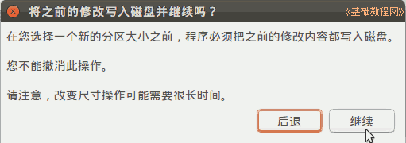
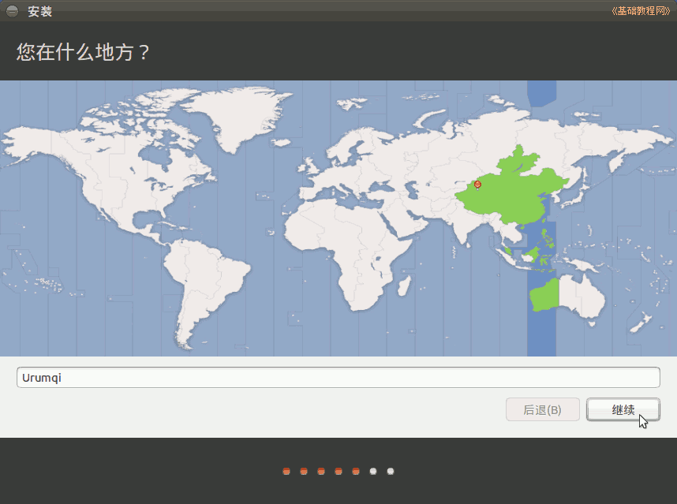
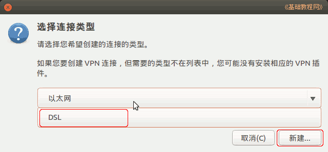

，可以按一下方向键呼出菜单项，再按右方向键选择“中文(简体)”，按回车键；
，可以按一下方向键呼出菜单项，再按右方向键选择“中文(简体)”，按回车键；Ubuntu安装基础教程
作者：TeliuTe 来源：基础教程网
二十三、安装Ubuntu14.04 返回目录 下一课14.04 版安装与前面版本类似，学习中遇到不清楚的地方，可以参考一下前面的内容，操作中注意细心，下面来看一个练习；
1、进入 live cd 桌面
1）下载地址：http://releases.ubuntu.com/14.04/，设置好启动后，断开网络，然后重启动计算机，可以用硬盘启动，也可以刻成光盘启动
进入后找蓝色链接点击下载，如 ubuntu-14.04-desktop-i386.iso，64位CPU可以下载amd64的版本，其中的；desktop是桌面版，server是服务器版，torrent是BT下载；
其他下载地址：
中科大源 http://mirrors.ustc.edu.cn/ubuntu-releases/14.04/
阿里云开源镜像站 http://mirrors.aliyun.com/ubuntu-releases/14.04/
兰州大学开源镜像站 http://mirror.lzu.edu.cn/ubuntu-releases/14.04/
北京理工大学开源 http://mirror.bit.edu.cn/ubuntu-releases/14.04/
浙江大学 http://mirrors.zju.edu.cn/ubuntu-releases/14.04/
http://mirrors.163.com/ubuntu-releases/
http://cn.archive.ubuntu.com/ubuntu-releases/
http://ubuntu.srt.cn/ubuntu-releases/
http://tw.archive.ubuntu.com/ubuntu-releases/
http://mirror.switch.ch/ftp/ubuntu-cdimage/
http://ftp.heanet.ie/mirrors/ubuntu-cdimage/releases/
http://ftp.kddlabs.co.jp/020/Linux/packages/ubuntu/releases-cd/
WinXP硬盘安装请参阅：http://teliute.org/linux/Ubsetup/jichu0/jichu0.html
Win7/8(传统BIOS)硬盘安装请参阅：http://teliute.org/linux/Ubsetup/jichu3/jichu3.html
WinXP硬盘安装请参阅：http://teliute.org/linux/Ubsetup/jichu0/jichu0.html
Ubuntu 硬盘安装 Ubuntu 请参阅：http://teliute.org/linux/Ubsetup/jichu2/jichu2.html
UEFI Win7/8/Ubuntu 硬盘安装请参阅：http://teliute.org/linux/Ubsetup/jichu4/jichu4.html
2）启动后稍等，系统自动运行，在下边出来两个图标时，可以按一下方向键呼出菜单项，再按右方向键选择“中文(简体)”，按回车键；
3）等一会就进入一个桌面，这就是试用的 live cd 桌面，桌面左上边有有两个图标，右上角是“关机”按钮；
4）对于硬盘安装，点一下左上角的圆圈按钮，稍等在旁边出来的文本框中输入字母 ter 然后点击下边出来的终端图标，
如果出来中文，点一下输入条上的“中”变成“英”，拖到一边即可；
5）输入命令 sudo umount -l /isodevice 然后按一下回车键，没什么提示就是成功了，关闭终端；

6）点右上角的网络图标，点击把“启用网络”前面的勾去掉，断开网络；

2、安装系统
1）双击桌面“安装Ubuntu14.04 LTS”图标，稍等出来一个“欢迎”面板，左侧应该选中了“中文(简体)”，
如果不是就在左边选中它，然后点右下角“继续”按钮；

2）第2步是检查准备情况，要求磁盘空间足够，不要连接网络，一般不勾选更新和第三方软件，直接点“继续”按钮；

3）接下来第3步是询问安装到哪个分区，选择最下边的“其他选项”，点“继续”按钮；
4）接下来出来磁盘分区情况，如果要新建分区和转换分区可以参考前面的第7、13、15、16、19课，这儿是安装到之前12.04的Ext4分区上；

5）点击选中计划要安装的分区，可以根据分区类型和大小来确定，然后点下边的“更改”(Change..) 按钮；
6）在出来的对话框中，设定用于分区的格式Ext4，打勾“格式化”，在“挂载点”右边点一下，选 “/”，点“确定”
注意，格式化会删除这个分区上的所有文件，请提前备份重要数据；
7）点“确定”出来提示点继续，回到分区面板，检查一下分区编辑好了，如果还有 /home 分区，按原来的设，一般不打勾“格式化”，只需提前清理里面的配置文件

在下边是安装grub引导器的选项，可以选择安装到 / 所在分区，然后用Windows来引导Ubuntu，参阅：用 EasyBCD 在 Win 7/8 硬盘安装 Ubuntu
8）检查无误后，点“现在安装”，如果提示没有交换空间，点“继续”，这个是用于休眠的，大小跟内存相同的分区，一般不用它；
9）然后出来询问地区，点“继续”即可，或者在地图上找找自己所在的地区，这时已经开始安装了；

10）接下来是键盘布局，一般是“汉语”，直接点“前进”继续；
11）接下来是设定自己的用户名(小写字母)和密码等，从上到下依次输入即可，然后点“继续”；
12）然后接着继续安装过程，可以看一下系统的介绍；

13）耐心等待完成，然后出来一个对话框，点“现在重启”完成安装，按电源键也可以呼出关机对话框；
14）如果是光盘安装，稍等提示取出光盘，然后按回车键，重新启动计算机，安装完成；
3、连网换源
１）重新启动后，停在一个登录界面，点击自己的用户名，输入密码后按回车，进入系统；
2）进入桌面后会出来一个“不完整语言支持”的提示对话框，先不关闭拖到一边后面要用，（如果关闭了，后面点左边的齿轮“系统设置－语言支持”）；
3）先连网，找到屏幕右上角键盘旁边的一个网络图标，瞄准点左键，选“编辑连接”；
4）对于ADSL拨号宽带连接上网，在出来的对话框右边，点“添加”，然后在出来的对话框中间点“以太网”，选择 DSL ，然后点新建；

5）在出来的对话框里，在用户名里输入ADSL宽带用户名，下面的密码里，输入宽带密码，
然后点击第一个“常规”标签，打勾上边的 “可用时自动连接”，点右下角的“保持”按钮；
关闭对话框以后，稍等一下会提示连网成功，
也可以重新启动计算机，命令行使用 sudo pppoeconf 命令也可以；
(下面6-7是局域网的，宽带用户不要设置)
6）如果是局域网上网，在出来的对话框里，选中里面的“Wired connection1”，点右边的“编辑”按钮；
7）在出来的对话框里，选择 IPV4 设置标签，在下面的方法里选“手动”，再点下边的“添加”按钮，
在出来的文本框里，依次输入 IP 地址、子网掩码、网关，然后按回车键确定，在下面的 DNS 里输入 DNS 服务器地址，
检查一下，点右下角的“保存”按钮，在出来的认证中，输入自己的密码；
回到原来对话框点“关闭”，稍等一会就可以上网了，也可以重新启动计算机；
8）连接好网络后先换源，在左边的快速启动栏中点击“系统设置”按钮，在出来的窗口中点击“软件和更新”图标；
9）在出来的软件源面板下边，点击“中国的服务器”下拉列表，选择“其他站点”；
10）在出来的服务器列表中，选择163 或 cn99 的站点都可以，然后点右下角的“选择服务器”按钮返回；
11）关闭窗口后，出来身份验证，输入自己的登录密码后点“授权”，如果出来更新提示，点“重新载入”，等待完成就好了；
更多设置源的相关介绍，请参阅：http://teliute.org/linux/Ubsetup/lesson9/lesson9.html
4、更新系统
1）回到最开头的“不完整语言言支持”对话框，点“现在执行此动作”，如果找不着了，就点右上角齿轮图标－系统设置－语言支持；
2）如果出来提示“没有可用的语言信息”面板，点击“更新”按钮；
3）然后出来一个缓存更新的对话框，耐心等待完成，点“详情”可以查看进度；
4）然后在出来的“语言支持没有完全安装”对话框中，点“安装”，安装语言包；

5）待语言包安装完成后，点关闭按钮关闭对话框，点右上角齿轮选“注销”或重启系统就可用使用了；

本节学习了安装 ubuntu 14.04 的基本方法，如果你成功地完成了练习，请继续学习下一课内容；
本教程由86团学校TeliuTe制作|著作权所有
基础教程网：http://teliute.org/
美丽的校园……
转载和引用本站内容，请保留作者和本站链接。